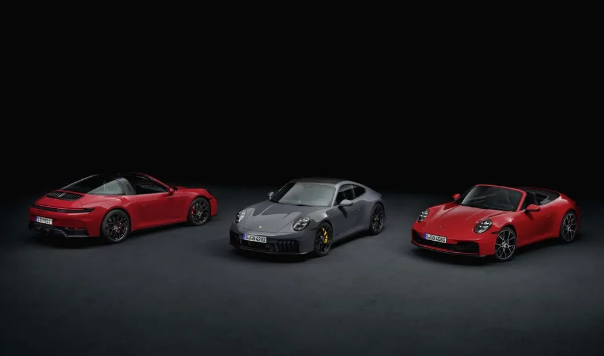

- porche 911
- porche 718
- porche Taycan

911 gts
1963년 포르쉐에서 356의 후속으로 공개한 RR 및 R4 방식의 스포츠카 및 슈퍼카.
명실상부한 포르쉐의 기함이자 상징 그 자체로, 현재 포르쉐의 모든 양산차는 911의 디자인을 토대로 개발한다.
웅크리고 앉아 있는 개구리처럼 생긴 패스트백 디자인과 "개구리눈"이라고 불리는 원형 전조등, 엔진이 뒤쪽에 배치되는 수평대향 엔진 + RR 방식을 고집하는 차로 유명하다.
실내 구조는 2+2 (+2는 작은 보조석) 방식을 계속 고수해 오고 있다.